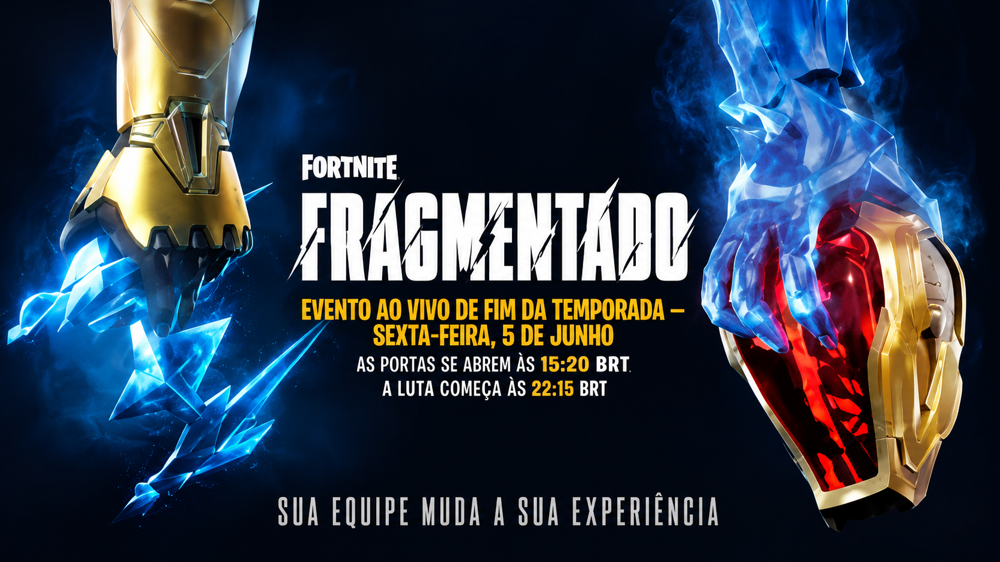

Fortnite lança evento Fragmentado e anima comunidade
O novo evento trouxe mudanças no mapa, desafios inéditos e novidades para os jogadores.A Epic Games lançou oficialmente o evento Fragmentado em Fortnite, trazendo diversas novidades para os jogadores do battle royale. O evento rapidamente chamou atenção da comunidade por apresentar mudanças visuais no mapa e novas atividades dentro do jogo.
Entre as principais novidades estão missões especiais, recompensas temporárias e alterações em algumas regiões do mapa. Muitos jogadores elogiaram os efeitos visuais e o clima diferente criado durante as partidas.
Além das mudanças no gameplay, o evento também trouxe novos itens cosméticos e desafios exclusivos para desbloquear recompensas. A Epic Games afirmou que outras novidades ainda devem chegar nas próximas semanas.
Nas redes sociais, a repercussão foi bastante positiva. Diversos jogadores compartilharam momentos do evento e destacaram a qualidade das novas animações e ambientações adicionadas ao jogo.
Especialistas apontam que eventos como Fragmentado ajudam a manter Fortnite entre os jogos mais populares da atualidade, principalmente por renovar constantemente a experiência dos jogadores.
A expectativa agora é que a Epic Games continue expandindo o evento com novas missões e conteúdos especiais ao longo da temporada.
⬅ Voltar